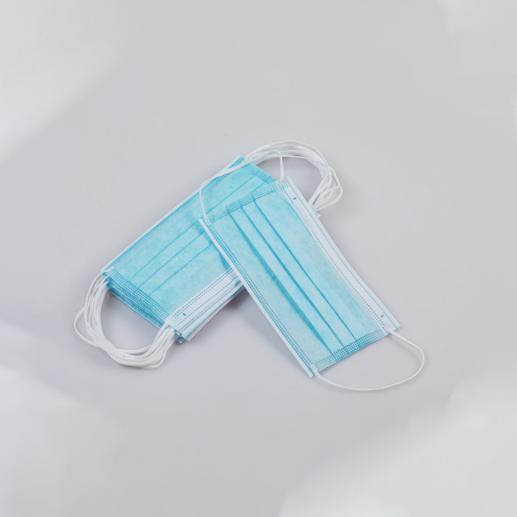

The surgical face mask is the single most recognisable piece of personal protective equipment in modern healthcare. Worn by surgeons, nurses, dentists, laboratory technicians, and patients alike, it serves as the first and most visible barrier against the transmission of respiratory pathogens in clinical environments. Yet despite its ubiquity, significant variation exists in mask quality, performance, and regulatory compliance — differences that directly affect the level of protection healthcare workers and patients receive.
For procurement teams responsible for sourcing face masks across hospital networks, clinic chains, or government health programmes, understanding the technical specifications behind a simple-seeming product is essential. This guide breaks down everything you need to know to make informed purchasing decisions.
The Three-Layer Structure Explained
A standard 3-ply surgical face mask consists of three distinct nonwoven layers, each serving a specific function:
- Outer layer (spunbond nonwoven, typically 25–50 gsm). This fluid-resistant layer faces outward and provides the first line of defence against splashes, droplets, and aerosols. It is usually treated or manufactured to repel liquid penetration. In many masks, this layer is coloured (blue, green, or black) for aesthetic differentiation and to help users identify the correct wearing orientation.
- Middle layer (melt-blown nonwoven, typically 20–30 gsm). This is the filtration layer — the most critical component of the mask. Melt-blown polypropylene is electrostatically charged during manufacturing, which enables it to capture particles significantly smaller than the pore size of the material itself. This electrostatic charge is what gives a surgical mask its bacterial filtration efficiency (BFE) and particulate filtration efficiency (PFE). The quality and weight of the melt-blown layer is the single most important factor in mask performance.
- Inner layer (spunbond nonwoven, typically 20–30 gsm). This soft, moisture-absorbent layer faces the wearer's face. It should be comfortable against the skin during extended wear and should wick moisture away from the mouth and nose. Poor-quality inner layers can cause skin irritation, fogging of eyewear, and reduced compliance among staff.
The total weight of a quality 3-ply surgical mask typically ranges between 25 and 35 gsm for the combined three layers. Lighter masks (below 25 gsm total) may indicate a thinner melt-blown layer, which compromises filtration. Heavier masks (above 40 gsm) may be unnecessarily thick and uncomfortable for extended wear, though they may offer higher fluid resistance for surgical applications.
Understanding Filtration Ratings: BFE and PFE
Two key metrics determine a surgical mask's filtration performance:
Bacterial Filtration Efficiency (BFE)
BFE measures the mask's ability to filter out bacteria-sized particles (approximately 3 microns, tested using Staphylococcus aureus). It is the primary rating used to classify surgical masks under both ASTM F2100 (US) and EN 14683 (European) standards.
A BFE rating of ≥ 95 percent is the minimum acceptable level for a surgical mask. High-performance surgical masks typically achieve BFE ≥ 98 percent or even ≥ 99 percent. A mask without a stated BFE rating should not be used in clinical settings.
Particulate Filtration Efficiency (PFE)
PFE measures the mask's ability to filter sub-micron particles (typically tested at 0.1 micron). While BFE is relevant for bacterial protection, PFE is more relevant for viral particle filtration, as viruses are significantly smaller than bacteria. PFE is not always required by surgical mask standards, but it is a useful additional specification for procurement teams to request.
It is important to understand that BFE and PFE ratings measure filtration of the material, not the mask as worn. Real-world protection depends heavily on fit, seal, and user behaviour — factors that are addressed through proper training and, where needed, the use of respirators (N95 / FFP2) rather than surgical masks.
International Standards: ASTM F2100 and EN 14683
Two standards dominate the global surgical mask market. Understanding the differences is crucial for procurement teams sourcing for international markets or multi-site operations:
| Requirement | ASTM F2100 Level 1 | ASTM F2100 Level 2 | ASTM F2100 Level 3 | EN 14683 Type I | EN 14683 Type II | EN 14683 Type IIR |
|---|---|---|---|---|---|---|
| BFE | ≥ 95% | ≥ 98% | ≥ 98% | ≥ 95% | ≥ 98% | ≥ 98% |
| Pressure Differential (breathability) | < 4.0 mm H₂O/cm² | < 5.0 mm H₂O/cm² | < 5.0 mm H₂O/cm² | < 49 Pa/cm² | < 49 Pa/cm² | < 60 Pa/cm² |
| Splash Resistance | 80 mm Hg | 120 mm Hg | 160 mm Hg ✓ | N/A | N/A | 16.0 kPa ✓ |
| Flame Spread | Class 1 | Class 1 | Class 1 | N/A | N/A | N/A |
| Sub-micron PFE | ≥ 95% | ≥ 98% | ≥ 98% | N/A | N/A | N/A |
| Typical Use | General patient care, isolation | General surgical procedures | Fluid-exposure procedures ✓ | General use | General surgical use | Surgical procedures with fluid exposure ✓ |
For most general healthcare settings — wards, outpatient clinics, dental practices — ASTM Level 1 or EN Type I masks are sufficient. For surgical theatres, emergency departments, and any setting where blood or body fluid splashes are likely, ASTM Level 2 or Level 3 (or EN Type IIR) should be specified. The "R" suffix in Type IIR stands for "resistance to penetration by synthetic blood" — the splash resistance requirement that distinguishes surgical masks from general-purpose medical masks.
Key Design Features
Nose Wire
A mouldable nose wire (typically aluminium or plastic-coated metal) allows the wearer to shape the top edge of the mask to the contour of the nose and cheekbones. A good nose wire should be fully encased within the mask layers — exposed metal can cause skin irritation and represents a contamination risk. Plastic-coated nose wires are more comfortable for extended wear but may be less mouldable than aluminium. The best masks use a flat, wide nose wire (approximately 3–4 mm) rather than a thin wire, as this distributes pressure more evenly and reduces the risk of wire fatigue and breakage.
Ear Loops vs Tie-On
Most surgical masks use elastic ear loops for ease of use. Ear loop masks come in two configurations:
- Standard ear loops (18–20 cm total length). Suitable for most adult users. Ultrasonic welding is the preferred attachment method, as it creates a clean bond without glue residue.
- Extended ear loops (20–22 cm). Designed for users with larger head sizes or for wearing over surgical caps and hoods. Procurement teams serving diverse workforces should consider stocking both sizes.
Tie-on masks (with head ties rather than ear loops) offer a more customisable fit and are preferred for long surgical procedures, as they eliminate pressure on the ears. However, they take longer to don and doff, making them less practical for high-turnover settings.
Pleat Design and Fit
Standard surgical masks have three to four pleats that expand to cover the nose, mouth, and chin. A well-designed pleat system should:
- Expand sufficiently to cover from the bridge of the nose to below the chin without gaps.
- Maintain pleat shape during breathing — collapsed pleats can restrict airflow and increase breathing resistance.
- Be securely sealed along the edges to prevent delamination during wear or removal.
Standard adult surgical mask dimensions are approximately 17.5 cm wide by 9.5 cm high (flat). Paediatric sizes (approximately 14.5 cm by 8.5 cm) are available for children's hospitals and dental practices.
Colour Options and Coding
Surgical masks are available in a variety of colours, with blue and white being the most common. Colour selection serves several purposes:
- Departmental differentiation. Just as with bouffant caps, some facilities use colour-coded masks to distinguish roles or departments at a glance.
- Professional appearance. Blue and green masks project a clinical, professional image and are the standard choice for operating theatres. Black masks are increasingly popular in dental and aesthetic practices for their modern appearance.
- Stain masking. In surgical settings, darker outer layers (blue, green) help conceal fluid stains that can be visually disturbing in the operating theatre.
Newrise Medical offers surgical face masks in blue, white, green, pink, yellow, and black. Custom colours can be matched to a facility's branding.
Surgical Mask vs N95 / FFP2 Respirator
A common point of confusion in healthcare procurement is the distinction between a surgical face mask and a particulate respirator (N95, FFP2, KN95). Understanding the difference ensures the right product is specified for each use case:
| Feature | Surgical Mask (ASTM / EN) | N95 / FFP2 Respirator |
|---|---|---|
| Filtration standard | BFE ≥ 95–98% (3-micron particles) | ≥ 95% (0.3-micron particles) |
| Fit requirement | Loose-fitting | Fit-tested, tight seal |
| Fluid resistance | Yes (Type IIR / ASTM Level 2–3) ✓ | Varies; some models include fluid resistance |
| Breathing valve | No | Available on some models |
| Regulatory approval | ASTM F2100 / EN 14683 / CE | NIOSH N95 / EN 149 FFP2 / GB2626 |
| Best for | Source control, general clinical use, surgical procedures | Airborne precautions, aerosol-generating procedures |
| Cost per unit | Low | Significantly higher |
Surgical face masks are designed primarily for source control — preventing the wearer's respiratory droplets from reaching others — and for protecting the wearer against splashes and large droplets. They are not designed to filter airborne particles at the sub-micron level. For aerosol-generating procedures or airborne infection isolation, a fit-tested respirator (N95 / FFP2) is required.
Quality Indicators When Sourcing
Not all surgical masks are created equal. When evaluating suppliers, pay attention to these quality markers:
- Test reports from accredited laboratories. Request BFE, PFE, and (where applicable) splash resistance test reports from recognised testing laboratories (e.g., Nelson Labs, SGS, or equivalent national accredited labs). Do not accept self-declared test results without third-party verification.
- Material composition disclosure. Reputable manufacturers will disclose the GSM weight of each layer and the material type (spunbond PP, melt-blown PP, etc.). This allows independent verification of quality.
- Ear loop tensile strength. Ear loops should withstand at least 10 N of force without breaking. Weak ear loops are a common failure point in low-quality masks and lead to premature disposal and waste.
- Nose wire adhesion. The nose wire should be securely bonded within the mask layers and should not shift or protrude during normal handling. Poorly bonded nose wires can cause skin irritation and compromise the mask's seal.
- Packaging integrity. Masks should be packed in clean, sealed polybags with clear product information, including manufacture date, expiry date, batch number, and applicable standards. Standard pack sizes are 50 masks per box.
- Manufacturing environment. Masks manufactured in ISO 13485 certified facilities or cleanroom environments offer higher assurance of product consistency and contamination control.
Consumption and Supply Chain Planning
Surgical face masks are among the highest-volume consumables in any healthcare facility. A 500-bed hospital may use 15,000 to 30,000 masks per month across all departments. Planning considerations include:
- Par level. Maintain at least 4 to 6 weeks of supply in stock, accounting for lead times from manufacturing to delivery. For imported masks, allow additional buffer for customs clearance and ocean freight variability.
- Mixed specifications. Stock different mask grades for different departments — Type I or ASTM Level 1 for wards and clinics, Type IIR or ASTM Level 2–3 for operating theatres and emergency departments. This ensures appropriate protection without overspending on unnecessary specifications for low-risk areas.
- Seasonal demand. Respiratory virus season (typically October through March in the Northern Hemisphere) can increase mask consumption by 30 to 50 percent. Procurement teams should plan seasonal stock increases accordingly.
- Consolidated shipping. Surgical masks can be shipped alongside other PPE and disposable consumables to reduce freight costs. Newrise Medical offers consolidated ordering and shipping for full-range procurement.
Industry Trends in 2026
Several developments are shaping the surgical mask market:
- Standardised labelling requirements. Regulatory bodies in multiple markets have tightened labelling requirements for medical face masks, mandating clearer disclosure of filtration ratings, standards compliance, and expiry dates. Procurement teams should verify that product packaging meets the requirements of their target market.
- Sustainable materials exploration. Manufacturers are developing biodegradable nonwoven alternatives (PLA-based spunbond and melt-blown) for surgical masks. While still at higher cost points, these products are gaining interest from healthcare systems with sustainability commitments.
- Supply chain diversification. Following the disruptions of the pandemic era, many healthcare buyers have moved from single-source to multi-source procurement strategies for surgical masks, maintaining qualified suppliers in China, Southeast Asia, and domestic manufacturing to reduce supply chain risk.
- Increased quality scrutiny. Post-pandemic, regulatory enforcement against substandard mask products has intensified globally. Buyers should expect and demand higher levels of documentation, traceability, and third-party testing from their suppliers.
"After reviewing five suppliers' test reports, we found BFE claims ranging from 95% to 99.5% — but only three had reports from accredited labs. The lesson: always verify the test source, not just the number on the packaging." — Procurement Director, Regional Health Authority, Southeast Asia
Conclusion
The surgical face mask is a deceptively simple product with significant implications for patient safety, healthcare worker protection, and infection control compliance. Getting the specification right — filtration level, fluid resistance, fit, comfort, and certification — ensures that every mask worn in your facility delivers the protection it was designed to provide.
Newrise Medical manufactures 3-ply surgical face masks in multiple colours and specifications, including ASTM F2100 Levels 1–3 and EN 14683 Types I, II, and IIR. Produced in our ISO 13485 certified facility in Changzhou, China, with custom colours, packaging, and OEM options available. Contact us for samples and pricing →